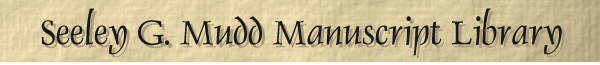
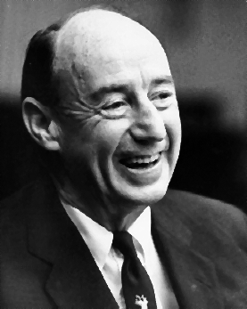

|  | |||
Exhibition at the Mudd Library
September 11, 2000 - February 15, 2001

In the centennial year of his birth, Adlai E. Stevenson is remembered for his contributions to public life: governor of Illinois, Democratic presidential condidate, and United Nations ambassador. In addition, this Princeton University graduate of the Class of 1922 served as a voice of conscience in both domestic and foreign policy during the years that followed World War II. Known for his wit and erudition in an era famous for blandness, Stevenson, in the words of Alistair Cooke, "remains the liveliest reminder of our time that there are admirable reasons for failing to be president." While not tasting the fruits of personal victory, his ideas became reality during the presidential administrations of John F. Kennedy and Lyndon B. Johnson. He spoke his heart and mind, and in doing so, won the admiration of his countrymen.
Drawing chiefly on the wealth of photographs, documents, recorded material, and memorabilia in the Adlai Stevenson Papers at Princeton University's Seeley G. Mudd Manuscript Library, the exhibition reveals both the private and public facets of Stevenson's eventful life: from confident pronouncements on issues of national importance to moments of anxious introspection. The story of Stevenson's life, which began in Los Angeles on February 5, 1900, and ended in London on July 14, 1965, is vividly chronicled as visitors pass through the stages of Stevenson's life. Beginning with the early influences of his life, Stevenson seemed destined for public service as the exhibit illustrates his political and journalistic roots. Stevenson's entrée in politics as governor of Illinois, and his later losses in the elections of 1952 and 1956 are detailed. The exhibit also explores the last and sometimes trying chapter of Stevenson's career, when, at John F. Kennedy's request, he assumed the role of United States Ambassador to the United Nations.
Rounding out the exhibit are two important audiovisual components: a condensed version of Andrew Schlesinger's 1990 PBS documentary narrated by Gregory Peck, entitled "Adlai Stevenson: The Man from Libertyville," and an interactive presentation of political commercials, interviews, speeches, and other material that captures Stevenson in the act of reaching out to his fellow citizens. Although he could not persuade a majority to accept his vision of a "New America" and elect him president, Stevenson's ideas took root in many parts of the country, and some of his program was later enacted into law, leaving a practical and moral legacy that still endures.
A sampling of items from the exhibition is available by following the links below.
Return to the Mudd Library home
page.
© 2000 Princeton University Library